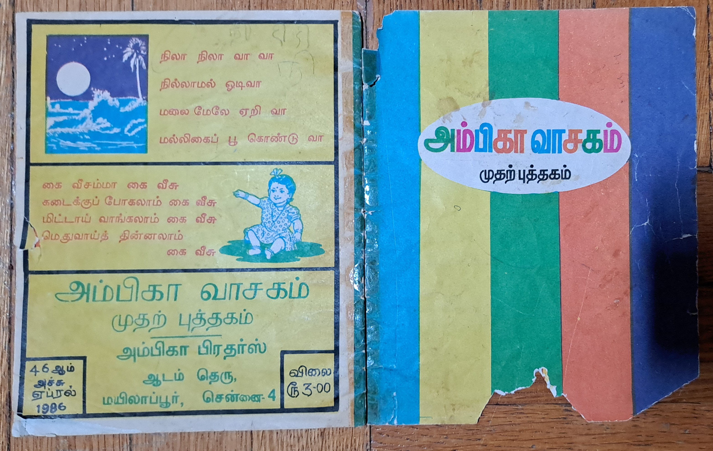
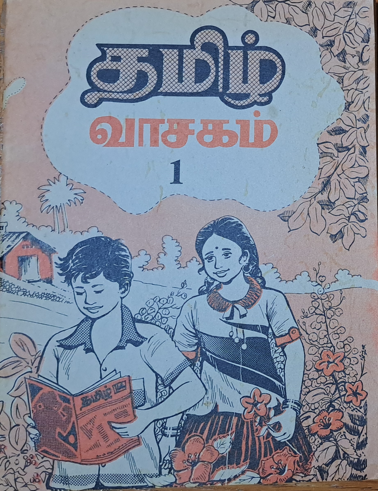
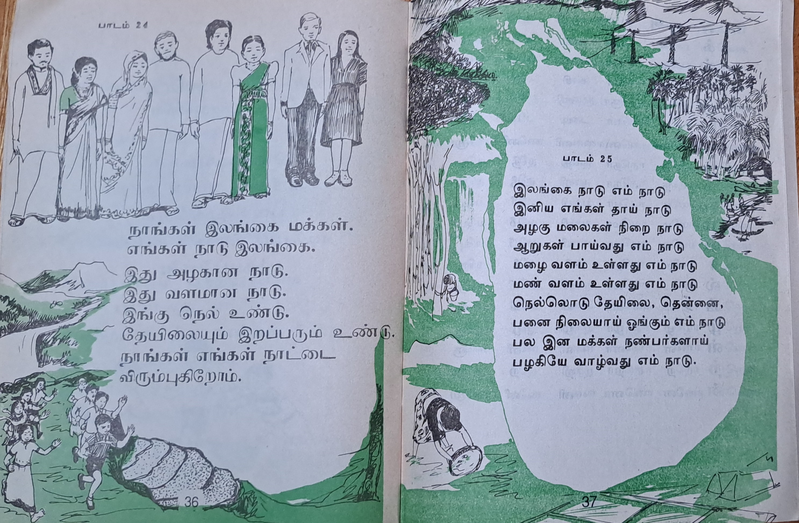

A printed grid of the Tamil alphabet from an old primer, the first column and row shaded in green, the ink smeared. In the left margin, 'ka, na, sa' are written in pencil, shaded over in graphite. Courtesy of familial archives.

A Tamil paper pamphlet literacy primer lies splayed open, face-down, its tattered covers covered in multicolored vertical stripes and images of palm trees, the sea, a moon, and a seated happy little girl with a flower in her hair. Courtesy of familial archives.

The peach-pink cover of a Tamil literacy primer reads 'Tamil Vaasaham 1' (Tamil Text 1) in a white cloud bubble, under which a boy and girl read and walk down a foliage-lined path, an orange house and palm trees in the background. Courtesy of familial archives.

A two-page spread, shaded in green, reads பாடம் (Paadam) 24 (Lesson 24) and depicts a a group of men and women watching children race down a hill, with Tamil writing printed on the opposite page in the white teardrop shape of Sri Lanka, framed in greenery and stones. Courtesy of familial archives.